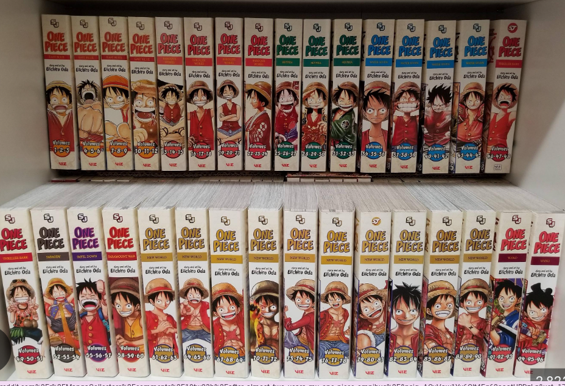

About Me This is all about my life. Here some things I love.
Singing
Singing is one of the world greast and fun thing to do. when you have a partner or a friend that you know you can sing to gether or you can sing by yourself.
Some Songs I like and Their Artists
Gabrela (k-Pop) - By Katseye
Montagem Mugada (Phonk) - By cape, JXNDRO AND SAYFACE
Sugar Talking (Pop)- By Sabrina Carpenter
Milkshake (R&B) - By Kelis
Yes And (Pop) - By Arina Grande
Binks Sake (Instrumetal)- By Spicy Violin
One Piece
One piece is one of my favorite books in the world. It is a thrilling adventure and soemtimes their is very funny humor. In the book series their so far their are 110 books. I am on book 75. Instead of places in the world of one piece their are called Arcs.The are i'm on is called Dressrosa.
List of My Favorite Arcs I have already read
Thriller Bark - Ghost Island
Dressrosa - Rocky Colosseum
Sabaody Archipelago- Midd Way Island Stop
Fishman Island- Mermaid/Man Island"

Writing
When I write I love to write for fun and and I like making books or short stories about Murder, Fiction, Etc: Even when i have to write for schol purposes i still love to write about It